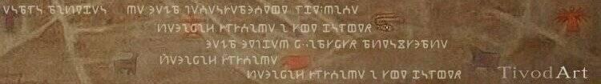

|  | |
Вітаємо Вас на сторінці художника з Закарпаття Артура Тиводара. На цьому сайті Ви маєте можливість познайомитись з творчістю та деякими роботами художника Артура Тиводара. Працює художник в різних напрямках та з різноманітними матеріалами. У свохї картинах Артур використовує як звичайні фарби, так і незвичні матеріали, наприклад, шкіра, зміїна шкіра, різноманітні напівдорогоцінні камені, наприклад, агат, сердолік, радусіт. Всі його роботи можна умовно розподілити на роботи виконані олією на полотні, іконопис тамперою на дошці, а також роботи зі шкіри з використанням напівдорогоцінних каменів. |
|
| |